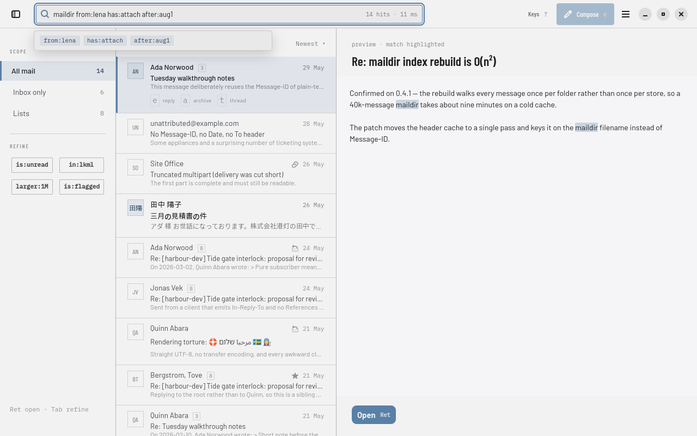
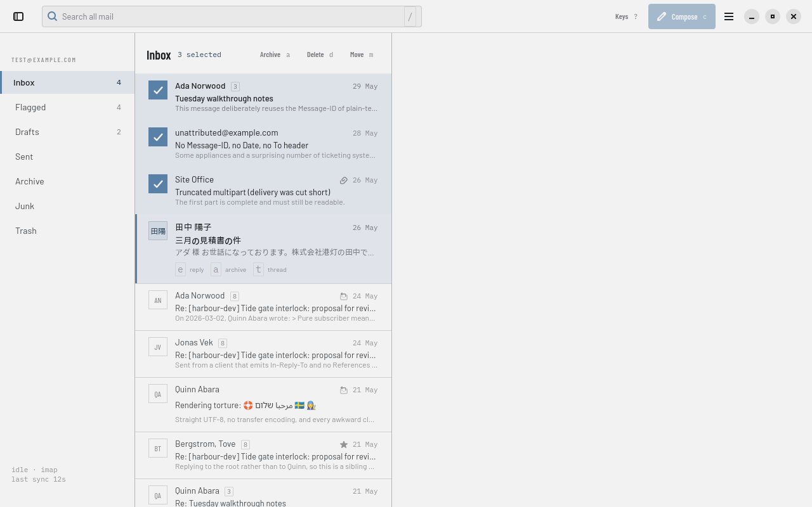
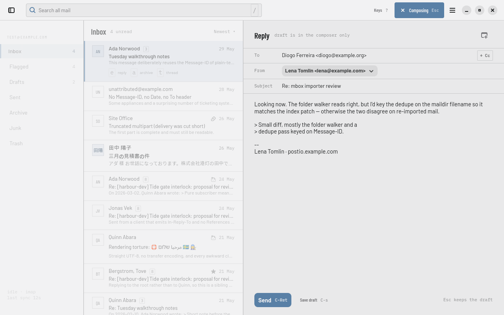

Postio is a local-first, keyboard-first email client. Your mail is kept in a local database with a full-text index, so search and navigation never wait on the network — and every action you take applies instantly, offline or not.

Opening the app is immediate, because there's nothing to wait for — mail already synced locally is already on screen. Every archive, flag, move or delete applies to your local copy right away; the server catches up in the background.
One query box searches mail, jumps to a folder, or finds a
person — from:ada has:attach after:2026-01-01 — and
it's local, so results appear as you type instead of after a
round trip.
Every command has a shortcut, a command-palette entry, and an
accessible action, generated from one table so the three can't
drift apart. e replies, a archives,
t opens a thread — the mouse stays excellent and is
never required.
Select a run of messages with x, Shift, or the mouse
and the list header itself becomes the action bar — archive,
delete, move, each with its own key hint. Selection and cursor
are two different things on purpose: the cursor is where the
keyboard is, the selection is what an action would hit, and
Postio never confuses the two.

Compose takes over the reading pane rather than opening a
separate window — the message list keeps its scroll position and
selection right where you left them, visible underneath. Reply
or start a new message, and Esc puts you back
exactly where you were without discarding a word.

Email is the most sensitive thing on most people's machines, and mail is content designed to phone home. Postio treats that as a design constraint, not a checkbox.
Tracking pixels and remote images load only after you allow them, per sender — never on by default.
Disposition-Notification-To is tracking with a
friendly name, and Postio doesn't send one without you asking.
No link prefetch, no favicon fetch. The message reader has
JavaScript and network access off; images referenced by
cid: resolve from what already synced.
No crash reporting, no update ping, no analytics — on this page either. Your credentials live in your OS keyring, never in a config file, never in a log.
Every action follows the same rule: write to the local database, queue the network operation, repaint. The network is never in the critical path of anything you do — which is also what makes offline just the normal case rather than a special mode.
Mail metadata, threads and sync state live in SQLite with an FTS5 index; raw messages and attachments sit in a content-addressed blob store. Nothing is ever loaded into memory all at once — the message list is windowed over paged queries, even at hundreds of thousands of messages.
Every command in Postio — keyboard shortcut, palette entry, accessible action — comes from a single registry table. A command that isn't in it doesn't exist anywhere in the UI, which is what keeps the keyboard, the mouse and a screen reader in agreement.
Conversations are reconstructed locally with JWZ threading over message headers, using whatever a server offers as a hint and never as the answer — so a server that threads badly doesn't make Postio thread badly.
This codebase is almost entirely AI-generated. Postio is written by AI coding agents under a human maintainer who sets scope, reviews the results, and makes the product calls. Every piece of work is a GitHub issue worked in its own branch; test-driven development is mandatory; the invariants above — no SQL in the view layer, no message content in a log, a destructive command must be undoable — are checked by the build, not just remembered. The reasoning for every non-obvious decision is written down as an architecture decision record, in public.
Postio's first release is deliberately narrow: one account, done properly, before anything else. Here's what's already decided for after that — none of it is built yet unless this page says so.
A second account, a unified inbox that groups threads across accounts at read time, and signing in to providers that require OAuth 2 instead of a password. The design is settled and published; the implementation is underway.
The same search language you'd type in the search bar, reused as the condition for a rule that files mail as it arrives — one language to learn, not two.
A real address book grown from the people already in your mail, with groups and vCard import/export — not just an autocomplete cache.
AI is a founding idea for Postio and is deliberately absent from the first release, so the core mail experience lands excellently on its own first. When it arrives, two rules are already fixed: it can never send or modify mail without you confirming in the Postio UI, and every request to a remote model is opt-in, per account, and logged where you can read it.
Postio is pre-release and under active development. The first release targets Linux (GTK4 / libadwaita) with one IMAP and SMTP account, authenticated with a password or an app-specific password — reliable read, search, compose and reply, fully keyboard-operable, with sync and errors always visible. It is not yet packaged for easy install.
The most current picture of what's done and what's left is the issue tracker itself, not this page — a snapshot here would be out of date within a week.
There's no packaged build yet, so running Postio means building it from source. The README has the current system dependencies and the exact steps.
git clone https://github.com/dlapiduz/postio cd postio && cat README.md
Every decision and every piece of work is public: the product spec, the architecture decisions, and the issue tracker where the project plans and argues with itself.